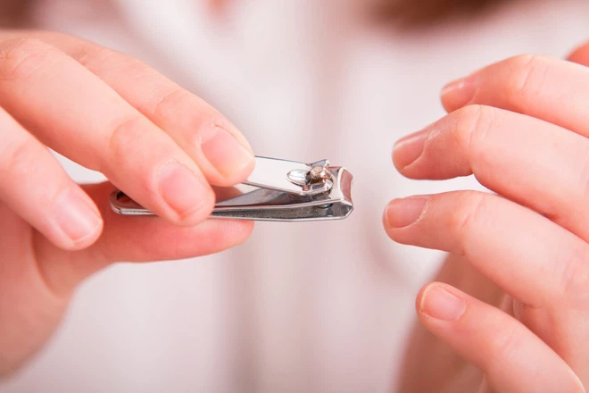
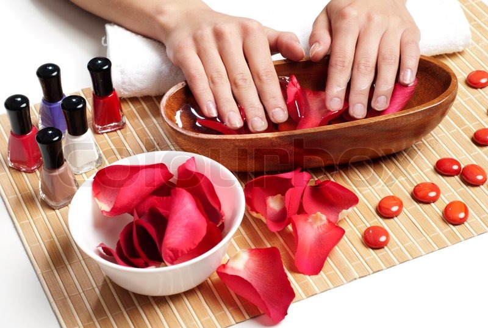
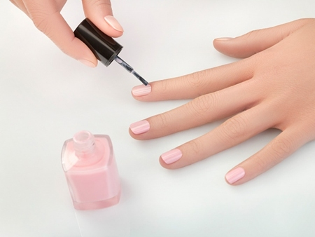
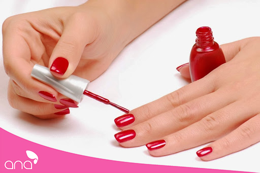

Here we will show you how to do basic nail.

A set of clean, beautiful nails will help add a beautiful touch to the hands. Besides, it also shows that you are a good person, this will help you win a lot of sympathy with each person around. However, if you only cut nails alone, it is not enough, but need more basic nail steps. If you are a beginner to nail, you should choose for yourself a quality kit and follow the basic nail making instructions below.
1. We need to prepare nail tools
Before doing nail, you need to prepare enough and the right tools to nail. Nail tools play a very important role, greatly contributing to the success of your home nail set.
You need to be prepared:
- Nail polish
- Coatings, primers
- Nail files
- Press trimming hands skin
- Rub
- Cotton swab
- Adhesive plaster
- Stone (if needed)
2. Steps to do basic nail
If this is your first home manicure, you should prioritize choosing the simplest nail patterns (smooth nail patterns), then do all kinds of floral, studded nails. All nail templates will go through the following basic, necessary steps:

Step 1: Trim your nails
If you have ever used nail services, you will not be unfamiliar with this step. It looks easy, but right from step one, many of you feel really difficult. In this step, you need to learn to hold the scissors. The next step is to learn how to cut excess skin: what to cut and which not to. The last Vfa learns to trim and trim nails.

Step 2: Nail files
You use a file to gently file each nail to make them as even and as beautiful as possible. The file has the function of completely removing excess skin as well as correcting uneven nails. Not only that, files also help smooth the cut caused by nail clippers.

Step 3: Soak your nails in warm water
After filing, you should clean the cuticle by soaking your hands in warm water, do not use too hot water it will burn your hands. Soaking time is 1-2 minutes to clean the cuticles, remove dirt.

Step 4: Primer
Primers or primers function to prevent harmful effects from nail polish from affecting the nail. In addition, the primer also creates a base layer to help the next paint layer to be smoother and more shiny. As you can imagine, before makeup, we often have a foundation to protect the skin. The use of primers is the same.

Step 5: Coating
Topcoat is the color of lipstick that you love or your customers love. After the primer dries. You can choose for yourself a color of paint as you like and apply 2 to 3 times to your nails for a standard color. Note, you should have time for each layer to dry completely before continuing to apply the next layer! In the meantime, you can also give your nails more shimmer by drawing some stylized strokes according to your creativity.

Step 6: Paint ball
After all, use a light polish to gently cover your dry nail. This is considered as the locking step to protect the nail from external factors. At the same time, it helps the nail be shiny and keeps the color longer.
You should follow the steps above to help you own a beautiful and lasting nail set over time.